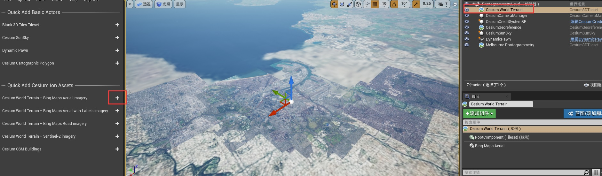
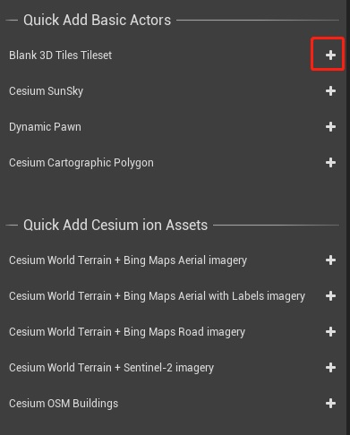
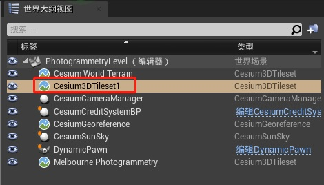
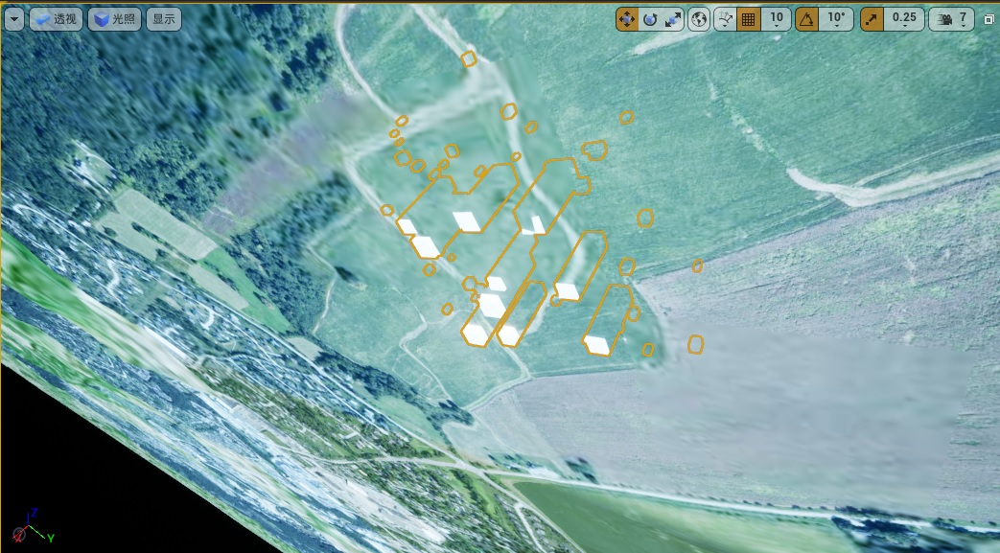
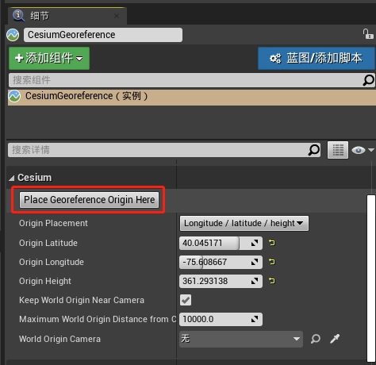

第一步：新建空白关卡

第二步：添加倾斜摄影数据
去网站将数据资产添加到自己的账户

第三步：以倾斜摄影数据为中心

看起来怪怪的是因为球心坐标系与游戏的坐标系统有所不同， 虚幻编辑器的摄像机 Z 方向是向上的。在地球上（与大多数游戏不同）以地球为中心的坐标系统的向上方向取决于你在世界的位置。
通过点击 CesiumGeoreference 的 Place Georeference Origin Here 按钮快速设置场景坐标原点到当前相机位置

此按钮将重新定位虚幻引擎当前关卡的坐标系统，使其中心点(0,0,0)准确地位于摄像机之前的位置，并对齐虚幻引擎的坐标轴，使+X指向东方，+Y指向南方，+Z指向上方
第四步：添加光照 CesiumSunSky
添加照明并调整时区和时间

第五步：添加地球影像地形

修改摄影测量数据的位置

第六步：从本地目录添加 3D Tileset
1. 在场景中添加了一个新的空白 Cesium3DTileset Actor


2. 设置本地 Tileset 文件路径

定位到添加的 tileset actor，场景和数据朝向很可能是错误的

这是因为 CesiumGeoreference actor 的原点距离 LocalTileset actor 很远。
3. 重新设置原点

修改 3D Tileset 数据的 Z 值

影像地形数据
可以通过在本场发布数据服务的方式，类似这种 http://localhost:portNumber/terrainAsset
经度和时区
摘自知乎
经度与纬度组成了一个坐标系统，称为地理坐标系统。通过经纬度表示地球上的任何一个位置。
国际上规定以通过英国伦敦近郊的格林尼治天文台旧址的经线作为计算经度的起点，即经度零度零分零秒，也称“本初子午线”。在它东面的为东经，共180度；在它西面的为西经，共180度。因为地球是圆的，所以东经180度和西经180度的经线是同一条经线。各国公定180度经线为“国际日期变更线”。为了避免同一地区使用两个不同的日期，国际日期变线在遇陆地时略有偏离。
地球自西向东转，东边时间就要比西边早。规定将全球分为24时区，东西各12时区，每个时区跨经度15度，以英国格林尼治天文台旧址为零时区，两个相邻时区之间相差1小时。
不同时区的时间按照同减异加、东加西减的原则计算。比如，北京位于东8区，纽约在西5区，北京时间要比纽约早13个小时。